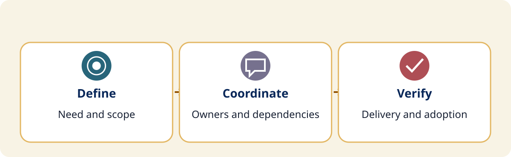

Project Management
Project Management and Change Leadership
A focused 50-minute session with practical models, individual thinking, and short neighbor discussions.
Make the next decision clearer.
A technical installation is only part of a successful school project. In this focused conference adaptation of the supplied project-management module, use one fictional district case to define scope, identify stakeholders and dependencies, plan communication, and distinguish delivery from sustained use. Experience brief models, individual thinking, neighbor discussions, and a small planning task you can adapt to a real initiative.
Learning objectives
- Define a project’s purpose, scope, owner, and acceptance evidence.
- Identify stakeholders, dependencies, risks, and the next decision needed.
- Plan an update and measures that show adoption as well as delivery.
- Draft and revise a small next-step plan after a neighbor’s feedback.
Success criteria
- State an in-scope outcome and an explicit exclusion for the case.
- Identify a dependency, an accountable owner, and an escalation trigger.
- Propose a usable update and one delivery measure plus one adoption measure.
- Revise a next-step plan using evidence and a colleague’s question.

A fictional portable classroom remains offline after work stalled between facilities and IT. The principal receives assurances but no dependable completion date. Use only fictional or generalized details.
This 50-minute session practices selected planning decisions. It is not completion of the original four-hour module or a project-management certification.